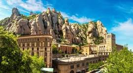
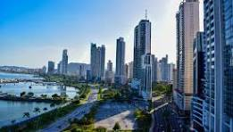
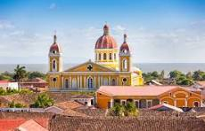
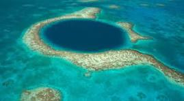
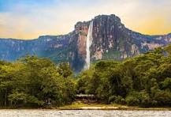
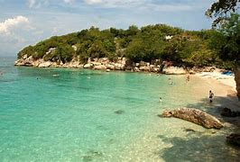
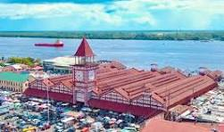
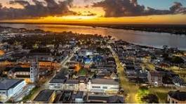
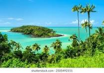

viajes y turismo
LUGARES MENOS
VISITADOS EN
AMERICA LATINA
Monserrat
- Es una pequeña isla caribeña y territorio britanico de ultramar, conocida por su ipresionante volcan activo Soufriere Hills, cuyas erpciones en los 90 destruyeron la antigua capitan, Plymouth. Hoy en dia, los turistas pueden explorar
ruinas volcanicas, disfrutar de playas tranquilas como Rendezvous Bay y hacer senderismo por valles y montañas verdes.es una abadía benedictina situada en la montaña de Montserrat, perteneciente a la comarca del Bages, provincia de Barcelona, España.
A una altitud de 720 metros sobre el nivel del mar. Administrativamente pertenece al municipio de Monistrol de Montserrat, aunque algunos de sus terrenos colindantes entran en el término de Collbató. Es un símbolo para Cataluña y España. Se ha convertido
en un punto de peregrinaje para creyentes y de visita obligada para los turistas.

Panama
- Ofrece una mezcla vibrante de modernidad y cultura tradicional. La Ciudad de Panama destaca por el Canal de Panama, una de las maravillas de la ingenieria moderna, y por el Casco Viej, un barrio historico lleno de vida. En las
tierrs altas, Boquete ofrece paisajes montañosos, plantaciones de cafe y senderos de aventura.Panamá es también un país rico en biodiversidad y atractivo turístico. Entre sus destinos más conocidos están el archipiélago de Bocas del Toro, ideal para el turismo
de playa; Boquete, en la región montañosa de Chiriquí, famoso por su café y senderismo; y San Blas, un conjunto de islas en el Caribe habitado por la comunidad indígena Guna. Además, el Parque Nacional Darién es uno de los más importantes de América Central por
su gran biodiversidad.La cultura panameña es una mezcla de tradiciones indígenas, africanas, españolas y de otras regiones del mundo, lo que se refleja en su música, gastronomía y festividades. En resumen, Panamá es un país con una ubicación geográfica privilegiada,
una economía dinámica y una riqueza cultural y natural que lo convierte en un lugar único en América Latina.

Nicaragua
- Conocida como la " tierra de lagos y volcanes", combina bellezas naturales con un fuerte legado colonial, Granada y Leon son ciudades historicas con arquitecturas colonial bien conservada.
Nicaragua es ideal para viajeros aventureros y amantes de la naturaleza.La cultura nicaragüense es diversa y está influenciada por raíces indígenas, africanas y españolas. La música tradicional, como el son nica y la marimba, es muy popular, y la poesía también ocupa
un lugar importante en la identidad nacional, con figuras destacadas como Rubén Darío, considerado el padre del modernismo literario en lengua española.

Belice
- Es famosos por su barrera de coral, la segunda mas grande del mundo, por el Gran Agujero Azul , uno de los mejores sitios de buceo del planeta. Ademas de su riqueza marina, tambien alberga ruinas mayas como Caracol,
Lamanai y Xunantunich. Es perfecto para el turismo ecologico, arqueologico y de aventura maria.Belice es conocido por su gran biodiversidad y su impresionante patrimonio natural. Uno de sus mayores atractivos es la Barrera de Coral de Belice, la segunda más grande
del mundo después de la de Australia. Este sistema coralino es Patrimonio Mundial de la UNESCO y un destino muy popular para el buceo y el snorkel, con lugares icónicos como el Blue Hole (Gran Agujero Azul). Además, el país cuenta con numerosos parques nacionales, selvas
tropicales, ríos y reservas naturales.

Venezuela
- Es un pais de contrastes naturales:deesde el Salto Angel, la cascada mas alta del mundo en Canaima, hasta los Andes en Merida, los llanos con su rica fauna, y las playas del ParqueNacional Moncorroy.
A pesar de su potencial turistico, actualmente se recomienda consultar la situcion del pais antes de viajar.Venezuela es un destino turístico fascinante por su gran diversidad natural, su clima tropical, y su riqueza cultural. A pesar de los desafíos políticos y económicos
que ha enfrentado en los últimos años, el país conserva paisajes únicos, playas paradisíacas, montañas imponentes, llanuras infinitas y selvas exuberantes que atraen a los amantes de la aventura, la naturaleza y el ecoturismo.

Haiti
- Ofrece una rica historia como la primera republica negra librey la segunda mas antigua de America.tambien posee una cultura unica basada en raices aricanas, francesas y tainas, con un arte y musica distintivos.
Es un destino interesante para el turismo cultural y solidario.Situado en la isla de La Española en el Caribe, es un país con una historia fascinante, una cultura vibrante y una belleza natural poco explorada por el turismo convencional. Aunque ha enfrentado grandes desafíos
sociales, políticos y naturales, Haití ofrece a los viajeros una experiencia única y auténtica, rica en historia, arte, música y paisajes sorprendentes.

Guyana
- Es un destino poco explorado pero fascinante. Su principal atractivo natural es el Salto Kaieteur, una de las cascadas mas altas del mundo.La selva guyanesa es ideal para el ecoturismo, con gran biodiversidad
y experiencias autenticas con comunidades indigenas.. Es uno de los destinos turísticos más desconocidos del continente, pero también uno de los más sorprendentes para los amantes de la naturaleza, la aventura y la cultura diversa.
A diferencia de sus vecinos hispanohablantes, Guyana es un país de habla inglesa, con una rica mezcla de culturas africanas, indias, indígenas, europeas y caribeñas. Esta diversidad se refleja en sus festividades, su comida, sus lenguas criollas y su hospitalidad.
El mayor atractivo turístico de Guyana es su belleza natural virgen. Gran parte del territorio está cubierto por selvas tropicales, sabanas y sistemas fluviales que forman parte de la cuenca del Amazonas.

Costa Rica
- Costa Rica es un país pequeño en tamaño, pero grande en biodiversidad, estabilidad y calidad de vida. Con una sociedad pacífica, sin ejército, y un fuerte compromiso ambiental, ha logrado convertirse en un
ejemplo en América Latina en materia de democracia, sostenibilidad y bienestar social.Es uno de los destinos turísticos más populares del continente gracias a su asombrosa biodiversidad, su política de conservación ambiental y su ambiente pacífico. Con costas tanto en el océano Pacífico como en el mar Caribe, y una gran variedad de paisajes, Costa Rica es ideal para el ecoturismo, la aventura y el descanso.
A pesar de ser un país pequeño, Costa Rica alberga aproximadamente el 5% de la biodiversidad del planeta.

Guayana Francesa
Es un departamento de ultramar de Francia en Sudamerica. Destaca por su base espacial en Kourou, desde donde se lanzan satelites europeos. Es un destino singular que combina naturaleza virgen
con tecnologia espacialy herencia colonial.La cultura guayanesa es una mezcla rica y colorida de tradiciones francesas, africanas, indígenas y caribeñas. Las celebraciones del Carnaval de Cayena, que duran
varias semanas, son una de las expresiones culturales más importantes, combinando música, danza y desfiles.A pesar de formar parte de Francia, existen importantes desigualdades sociales y económicas, y con frecuencia se presentan demandas locales por mayor autonomía, inversión en servicios públicos y respeto por los derechos de las comunidades locales.
